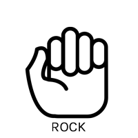
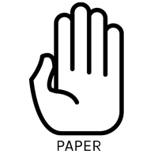

Rock Paper Scissors: Game On!
Player Throw
 
Click on the image of your throw
Computer Throw
Outcome
So far, you have won
times, the computer has won
times, and there have been
ties.
Start Over
 Click on the image of your throw
Click on the image of your throw